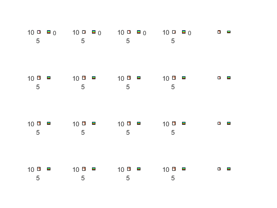

clear;
clc;
mymap = [0.6350 0.2 0
1 1 1
0 0 0
1 0 0
1 1 0
0 1 0
0 1 1
0 0 1
0.5 0.5 0.5];
intersection = [5 15];
new_car_prob = 0.5;
dec_prob = 0.2;
max_red = 5;
thr_press = 4;
top_is_red = 1;
left_is_red = 0;
count_red_left = 0;
count_red_top = 0;
full_road = zeros(30,30);
[iter,~] = size(full_road);
full_road(:,:) = -1;
lane = -ones(2,30);
[d,c] = size(lane);
index_lane1 = randsample(20,5)';
index_lane2 = randsample(20,5)';
lane(1,index_lane1) = randi([0 5],1,5);
lane(2,index_lane2) = randi([0 5],1,5);
full_road(intersection(1),:)=lane(1,:);
full_road(:,intersection(2))=lane(2,:)';
full_road(intersection(1)-1,1:intersection(2)-1) = -2;
full_road(intersection(1)-1,intersection(2)+1:end) = -2;
full_road(intersection(1)+1,1:intersection(2)-1) = -2;
full_road(intersection(1)+1,intersection(2)+1:end) = -2;
full_road(1:intersection(1)-1,intersection(2)-1) = -2;
full_road(intersection(1)+1:end,intersection(2)-1) = -2;
full_road(1:intersection(1)-1,intersection(2)+1) = -2;
full_road(intersection(1)+1:end,intersection(2)+1) = -2;
full_road(intersection(1)+2,intersection(2)-2) = 3;
full_road(intersection(1)-2,intersection(2)+2) = 1;
subplot(4,5,1);
imagesc(full_road(1:20,1:20));
axis equal;
colormap (mymap);
caxis([-2 6])
colorbar
lane(2,intersection(1)) = 6;
for e=2:1:20
if ((lane(1,1) == -1) && (rand(1)>1-new_car_prob))
lane(1,1) = 1;
end
if ((lane(2,1) == -1) && (rand(1)>1-new_car_prob))
lane(2,1) = 1;
end
lane(1:2,21:30) = -1;
for j=c-10:-1:1
for i=1:d
moved = 0;
speed = lane(i,j);
if(speed>=0 && speed<6)
if(speed<5)
if(lane(i,j+1:j+speed+1)==-1)
lane(i,j) = -1;
lane(i,j+speed) = speed + 1;
next_speed = lane(i,j+speed);
moved = 1;
end
end
if(lane(i,j+1:j+speed)==-1)
lane(i,j) = -1;
lane(i,j+speed) = speed;
next_speed = lane(i,j+speed);
moved = 1;
end
if(moved)
if(max(lane(i,j+speed+1:j+speed+next_speed)~=-1))
found = 0;
count = 0;
for k=j+1+speed:j+speed+next_speed
count = count+1;
if((~found)&&(lane(i,k)>=0))
found = 1;
lane(i,j+speed) = count-1;
end
end
end
else
if(max(lane(i,j+1:j+speed)~=-1))
found = 0;
count = 0;
for k=j+1:j+speed
count = count+1;
if((~found)&&(lane(i,k)>=0))
found = 1;
lane(i,j) = -1;
lane(i,j+count-1) = 0;
end
end
end
end
end
end
end
decreased = 0;
for j=c-10:-1:1
for i=1:d
rand_dec = lane(i,j);
if(rand_dec>0 && rand_dec<=5)
if ((lane(i,j) ~= -1) && (rand(1)>1-dec_prob))
lane(i,j) = rand_dec-1;
decreased = 1;
end
end
if (decreased)
rand_dec = rand_dec-1;
end
end
end
if(left_is_red && lane(2,intersection(1)+1)==-1)
lane(2,intersection(1)+1) = lane(2,intersection(1));
lane(2,intersection(1)) = -1;
end
if(top_is_red && lane(1,intersection(2)+1)==-1)
lane(1,intersection(2)+1) = lane(1,intersection(2));
lane(1,intersection(2)) = -1;
end
if(top_is_red)
count_red_top = count_red_top+1;
full_road(:,intersection(2)) = lane(2,:)';
full_road(intersection(1),:) = lane(1,:);
elseif(left_is_red)
full_road(intersection(1),:) = lane(1,:);
full_road(:,intersection(2)) = lane(2,:)';
count_red_left = count_red_left+1;
end
subplot(4,5,e);
imagesc(full_road(1:20,1:20));
axis equal;
colormap (mymap);
caxis([-2 6])
colorbar
left_press = sum(lane(1,1:intersection(2)-1)>=0);
top_press = sum(lane(2,1:intersection(1)-1)>=0);
if(count_red_top>=max_red)
left_is_red = 1;
top_is_red = 0;
lane(1,intersection(2)) = 6;
lane(2,intersection(1)) = -1;
count_red_top = 0;
elseif(count_red_left>=max_red)
top_is_red = 1;
left_is_red = 0;
lane(2,intersection(1)) = 6;
lane(1,intersection(2)) = -1;
count_red_left = 0;
else
if(top_press>=thr_press)
left_is_red = 1;
top_is_red = 0;
lane(1,intersection(2)) = 6;
lane(2,intersection(1)) = -1;
count_red_top = 0;
elseif(left_press>=thr_press)
top_is_red = 1;
left_is_red = 0;
lane(2,intersection(1)) = 6;
lane(1,intersection(2)) = -1;
count_red_left = 0;
else
if(top_press>left_press)
left_is_red = 1;
top_is_red = 0;
lane(1,intersection(2)) = 6;
lane(2,intersection(1)) = -1;
count_red_top = 0;
elseif(left_press>top_press)
top_is_red = 1;
left_is_red = 0;
lane(2,intersection(1)) = 6;
lane(1,intersection(2)) = -1;
count_red_left = 0;
end
end
end
if top_is_red==1, full_road(intersection(1)-2,intersection(2)+2) = 1; else, full_road(intersection(1)-2,intersection(2)+2) = 3; end
if left_is_red==1, full_road(intersection(1)+2,intersection(2)-2) = 1; else, full_road(intersection(1)+2,intersection(2)-2) = 3; end
end
